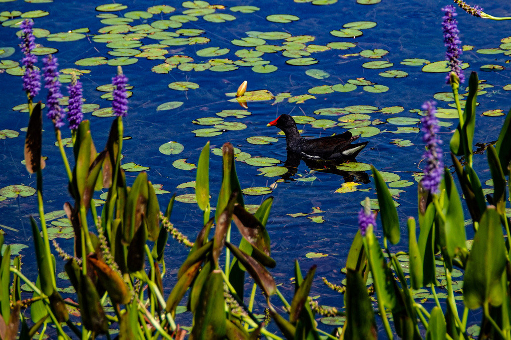

- Floating along the marshy edges of the ponds is a slate-gray bird with a red shield on its forehead — a bit like a swimming chicken.
- It is often taken for a duck, but a look at its feet gives it away: it belongs to the rail family and has no webbing at all.
- Instead it has long, widely splayed toes that work like snowshoes, spreading its weight so it can walk across lily pads and floating plants without sinking.
- It is also one of the more talkative residents of the wetland, filling the quiet with an unexpected mix of clucks, squawks, and odd, laughing chatter.
Slate-gray body, brownish back, a bold white stripe along the flanks, and a red frontal shield with a yellow-tipped red bill.
Yellow-green with very long, unwebbed toes.
Duller and browner, lacking the bright red bill.
Loud and varied for its size: sharp clucks, squawks, and a whinnying, laughing series of notes.
A dark, hen-sized water bird swimming with a head-bobbing motion, showing a vivid red-and-yellow bill and a white side stripe. If it climbs onto floating plants on long, skinny toes rather than webbed feet, you have confirmed a gallinule, not a duck.
An opportunist — seeds, leaves, and stems of water plants, plus insects, snails, and other small aquatic creatures, gathered while swimming, dabbling, or walking on vegetation.
Along the vegetated margins of the ponds — watch where plants meet open water, and listen for its loud calls from the reeds.
Year-round resident. Most easily found near pond edges with thick plant cover.
Watch from a distance and do not feed it. Gallinules are shy by nature and slip into cover when crowded.


- © Rob Carr (CC-BY-NC), via iNaturalist
- © David McSwain (CC-BY-NC), via iNaturalist
- © Christine Leamon (CC-BY-NC), via iNaturalist